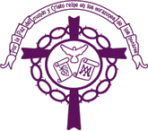
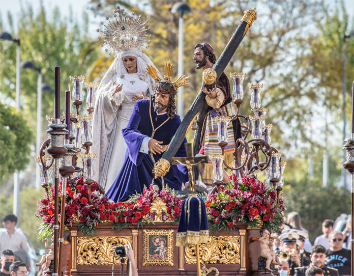

Tres Caídas
Parroquia de San José (Las Infantas)
Hermandad y Cofradía de Nazarenos de Nuestro Padre Jesús de Las Tres Caídas, María Santísima de la Paz y Bendito Patriarca San José

Numero de hermanos
320
Nazarenos
100
Autores
Nuestro Padre Jesús de Las Tres Caídas es obra de Francisco Joaquín Moreno Daza (1993). María Santísima de la Paz es obra de Francisco Joaquín Moreno Daza (1995). El Cirineo es obra de Lourdes Hernández Peña (2017).
Capataces
Fernando Martos Varela y sus Auxiliares
Música
A.M. Nuestra Señora de la Estrella.
RECORRIDO
| Hora | Cruz de guía |
|---|---|
| 16:15 | Salida |
| -- | Plaza de Rafael Ruiz Perdigones |
| -- | Garcilaso de la Vega |
| -- | José María Gabriel y Galán |
| -- | Antonio Machado |
| 17:00 | Fernando Quiñones |
| -- | Conductor Venacio Martínez |
| -- | Avenida de Sevilla |
| 18:00 | Canónigo |
| -- | Santa María Magdalena |
| -- | Plaza de la Constitución |
| 19:15 | Carrera Oficial |
| 19:30 | Santa Ana |
| -- | Nuestra Señora del Carmen |
| 20:00 | Pasarela |
| 20:30 | Parque |
| 21:00 | Parque |
| 21:30 | Esperanza |
| 22:00 | Alonso Cano |
| 23:00 | Plaza Antonio Romero Monge |
| -- | Plaza de Rafael Ruiz Perdigones |
| 23:30 | Entrada |